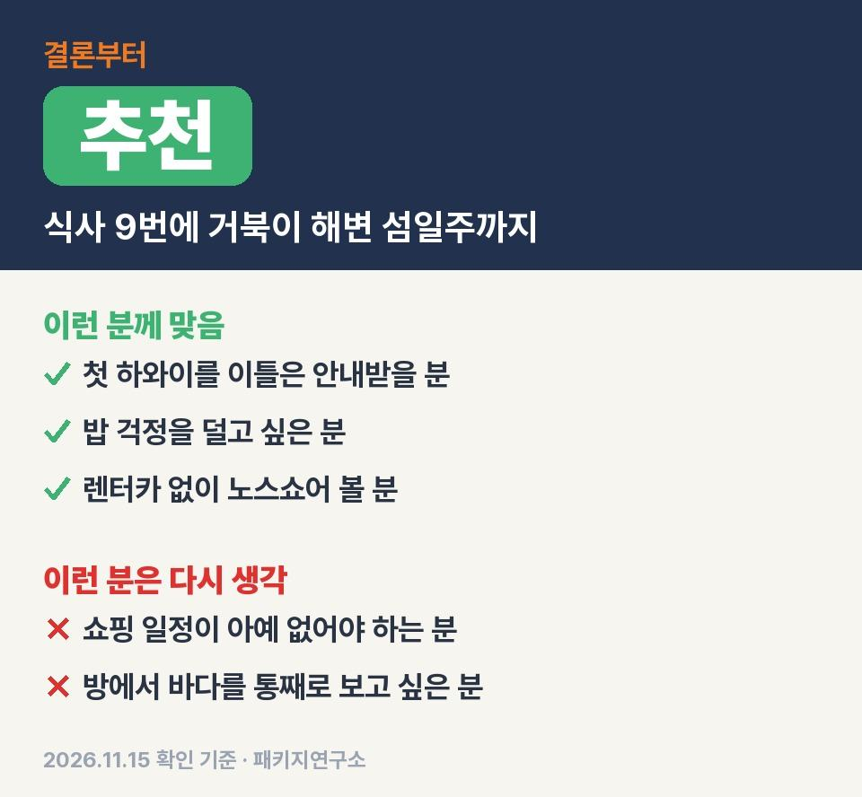
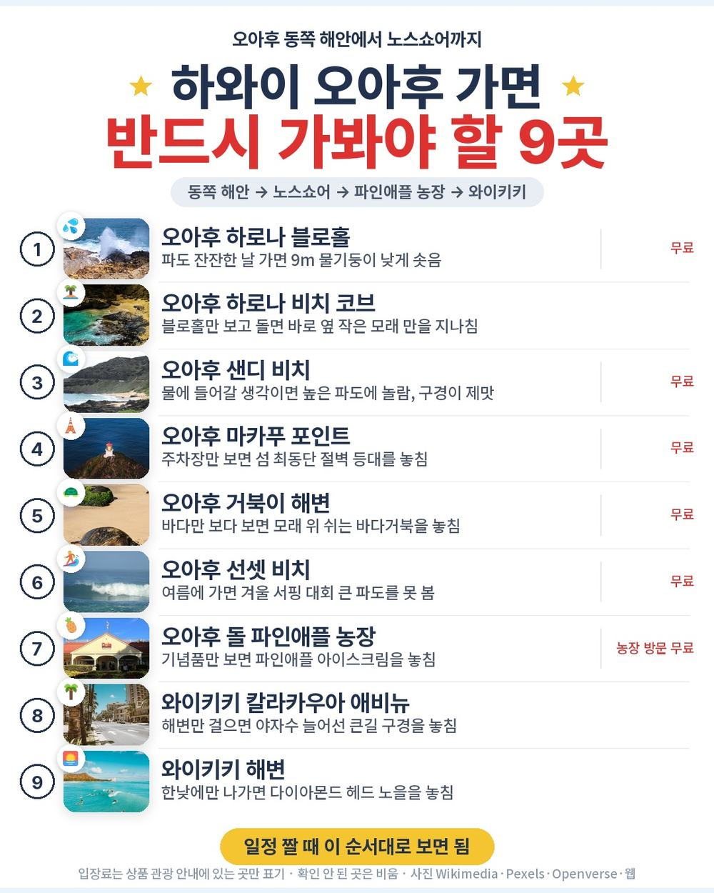
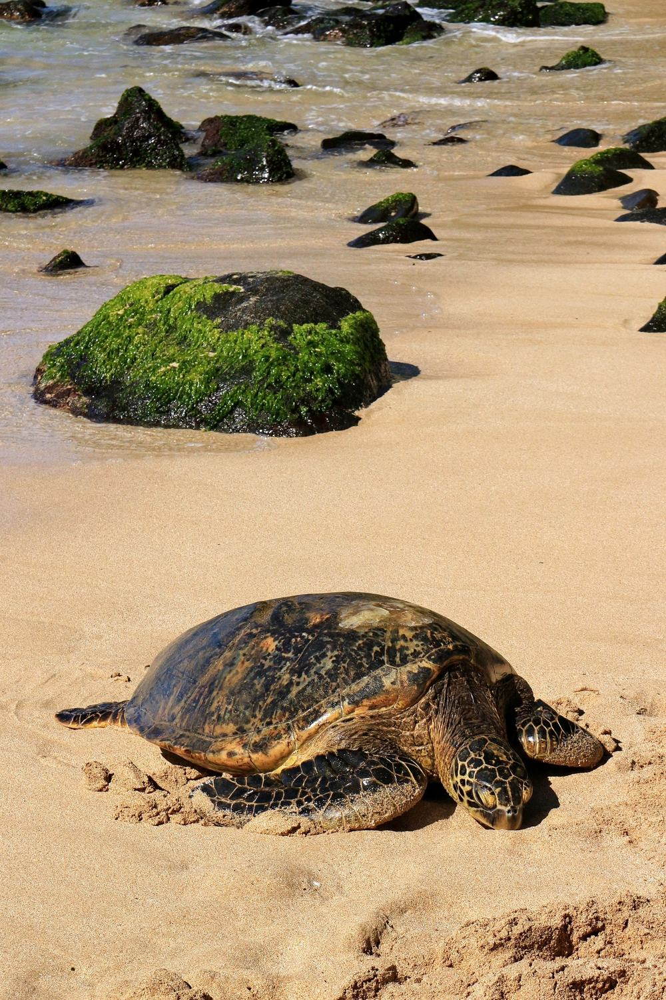
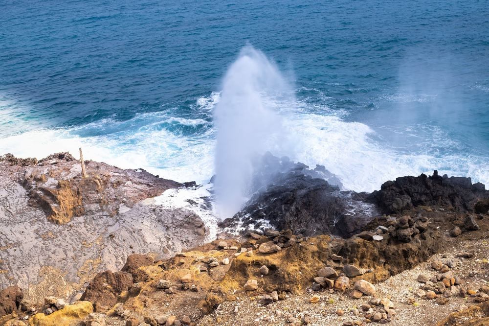
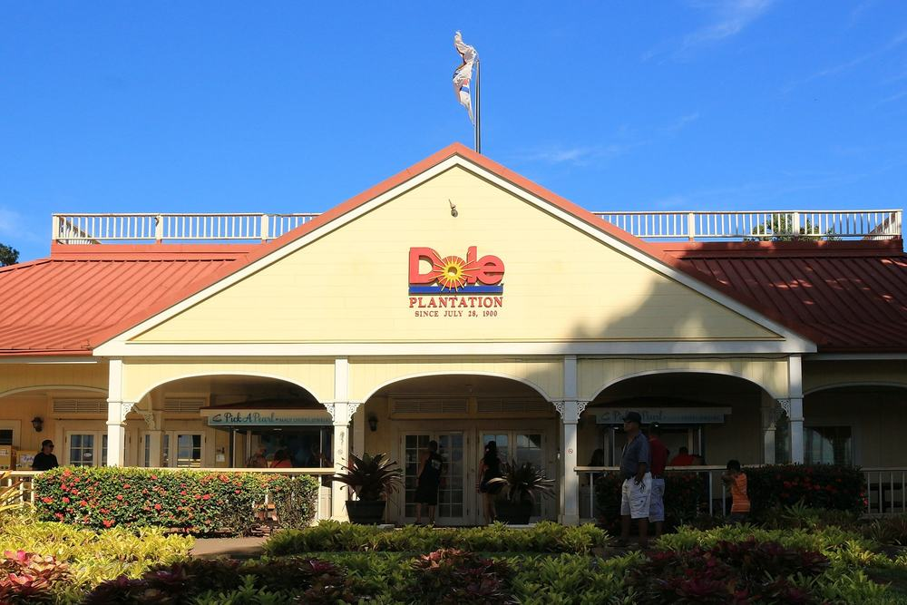

노스쇼어 거북이 해변과 파인애플 농장까지 가이드 차로 도는 날이 하루 통째로 들어 있고 끼니는 원문 기준 9번 포함임.
이 글은 다녀온 후기가 아니고, 상품 일정표와 포함·불포함 원문을 한 줄씩 따져 본 기록임.
결론 — 추천. 대한항공 직항, 와이키키 호텔 5박과 리조트피, 동쪽 해안·섬일주 관광 이틀, 조식 다섯 번과 특식이 272만 7,800원 안에 있음. 다만 쇼핑 일정이 하나도 없어야 하는 분은 맞지 않음.

오늘 기준 출발일별 요금 보기
https://naver.me/GYDXndMc

| 항목 | 내용 |
|---|---|
| 가격 | 1인 2,727,800원 (성인 · 11월 출발 기준) · 2인 5,455,600원 |
| 여행사 | 모두투어 (단독 행사) |
| 항공 | 대한항공 직항 (KE053·KE054) · 인천 20:50 → 호놀룰루 09:40 / 호놀룰루 11:40 → 인천 17:35 |
| 숙소 | 트윈핀 와이키키 5박 · 상품명 기준 파셜오션뷰 · 리조트피 포함 |
| 일정 | 5박 7일 · 관광 2일 + 자유 3일 · 포함 식사 9번 · 쇼핑 1회(잡화점 30분) · 가이드·기사 경비 1인 70달러 별도 |
▶ 내 출발일 오늘 기준 요금 확인 (제휴 링크 · 예약 시 수수료를 받으며 가격은 같습니다)
▶ 11월 15일 기준 하와이 패키지 최저 224만 2,800원부터 — 출발일별 값 한 화면에: 비교 페이지
| 번호 | 내용 | 한 줄 답 |
|---|---|---|
| 1 | 이 값에 들어 있는 것 | 식사 9번 |
| 2 | 현장에서 더 낼 돈 | 2인 약 29만 4천원 |
| 3 | 일정과 체력 | 버스는 이틀 |
| 4 | 자유여행으로 짜면 | 항공값 조회 실패 |
| 5 | 맞는 분 · 안 맞는 분 | 3 대 3 |
직항과 와이키키 다섯 밤에 섬 동쪽·북쪽 관광 이틀과 끼니 9번까지 얹은 구성임.
- 항공: 대한항공 인천–호놀룰루 직항 왕복, 유류할증료·제세공과금 포함
- 숙소: 트윈핀 와이키키 5박(같은 호텔 연박), 리조트피까지 상품가 안
- 식사: 호텔 조식 5번 + 특식 3번(중국식 랍스터·카후쿠 새우요리·불고기정식) + 한식 1번
- 관광: 1일차 동쪽 해안(하로나 블로홀 정차), 2일차 섬일주(거북이 해변·DOLE 파인애플 농장·와이켈레 아울렛)
- 그 밖: 공항 미팅·샌딩 셔틀, 한국어 가이드, 여행자보험, 자유일 렌탈 서비스·카카오톡 상담

거북이 해변은 입장료 없이 들르는 곳이고 파인애플 농장도 농장 방문 자체는 무료임. 기차 투어와 정원 미로만 따로 요금이 붙음. 식사 9번에 기내식은 넣지 않은 숫자라 실제로 받는 밥이 꽤 많은 편.
꼭 더 내는 돈은 경비 70달러와 ESTA이고 자유일 점심·저녁이 예산을 가름.
| 항목 | 금액 | 필수/선택 | 비고 |
|---|---|---|---|
| 가이드·기사 경비 | 140달러 (약 18만 7천원) | 필수 | 1인 70달러, 현지 지불 |
| ESTA 직접 신청 | 80달러 (약 10만 7천원) | 필수 | 1인 40달러 · 대행은 1인 8만원 |
| 자유일 점심·저녁 | 고르는 식당 따라 | 필수 | 조식은 포함 |
| 쿠알로아 랜치 | 1인 95~205달러 | 선택 | 투어 종류 따라 |
| 터틀 스노클링 | 1인 145달러 | 선택 | 오전 08:00~13:00 |
| 렌터카 | 하루 150달러부터 | 선택 | 본인 신용카드·면허증 |
| 합계 (2인 필수분, 끼니 빼고) | 220달러 (약 29만 4천원) | 1달러 약 1,336원 · 2026-11-14 환율 |
- 2인 총액(경비·ESTA까지): 약 574만 9,600원, 1인 약 287만 4,800원
- 와이켈레 아울렛 안내엔 「1인당 40달러」 줄이 따로 있음 — 일정표엔 관광으로 들어 있으니 예약 때 포함인지 물어보면 됨
- 선택관광은 안 해도 불이익 없음(원문)
버스 타는 날은 앞 이틀이고 첫날은 대부분 창밖 관광이라 앉아 있는 시간이 김.
| 일차 | 가는 곳 | 버스 | 걷기 | 점심 · 저녁 |
|---|---|---|---|---|
| DAY 1 | 인천 20:50 → 호놀룰루 09:40 → 다이아몬드 헤드·카할라·하나우마 베이(차창) → 하로나 블로홀(정차) → 샌디 비치·마카푸 포인트 → 호텔 | 약 2시간 | 적음 | 특식 · 특식 |
| DAY 2 | 섬일주 — 선셋 비치(차창) → 거북이 해변 → DOLE 파인애플 농장 → 와이켈레 아울렛 약 2시간 | 약 3시간 30분 | 보통 | 특식 · 한식 |
| DAY 3 | 전일 자유 (조식 포함) | 없음 | 본인 선택 | 없음 · 없음 |
| DAY 4 | 자유 (선택관광 고르면 그 일정) | 없음 | 본인 선택 | 없음 · 없음 |
| DAY 5 | 전일 자유 (조식 포함) | 없음 | 본인 선택 | 없음 · 없음 |
| DAY 6 | 조식 → 체크아웃 → 공항 → 호놀룰루 11:40 출발 | 약 30분 | 적음 | 기내식 · 기내식 |
| DAY 7 | 인천 17:35 도착 | 없음 | 적음 | 없음 · 없음 |
- 비행: 갈 때 8시간, 올 때 11시간 5분
- 첫날: 밤 비행기로 아침에 내려 바로 해안 관광이라 기내에서 자 두는 게 편함
- 둘째 날: 섬일주는 현지 사정에 따라 앞뒤 날짜로 바뀔 수 있다는 안내가 있음

하로나 블로홀은 11월~2월에 파도가 세서 물기둥이 더 활발하다고 안내돼 있음. 가 본 사람들은 바위가 험하니 전망대 울타리 안에서 보라고 함.
같은 목적지 다른 여행사 패키지, 쇼핑·선택관광·가이드 경비까지 비교
https://pkg-lab.com/go/?q=%ED%95%98%EC%99%80%EC%9D%B4+11%EC%9B%94&utm_source=ghpages&utm_medium=post&utm_campaign=daily
항공값을 오늘 조회하지 못해 합계는 못 냈고 직접 짜면 따로 챙길 칸만 정리함.
| 항목 | 금액 | 근거 |
|---|---|---|
| 인천–호놀룰루 직항 왕복 | 확인 못 함 | 2026-11-15 마이리얼트립 조회 실패 — 숫자를 지어내지 않음 |
| 와이키키 호텔 5박 + 리조트피 | 확인 못 함 | 날짜·호텔마다 다름 |
| 식사 | 따로 | 패키지는 조식 5번 + 특식·한식 4번 포함 |
| 공항 이동 | 따로 | 패키지는 공항 미팅·샌딩 셔틀 포함 |
| 동쪽 해안·노스쇼어 이틀 | 따로 | 렌터카(이 상품 선택관광 기준 하루 150달러부터) 또는 투어 |
| 여행자보험 | 따로 | 패키지는 포함 |
| 가이드 | — | 자유여행은 없음 |
- 노스쇼어는 와이키키에서 멀어 렌터카 없이 혼자 가기가 번거로운 쪽
- 직접 짜면 아침 다섯 끼도 따로 해결해야 함
- 항공·호텔 실값은 날짜를 정한 뒤 견줘 보는 게 정확함

이 상품으로 다녀온 사람들 후기엔 렌터카 없이도 이름난 곳을 편하게 돌았다는 말과, 단체 관광과 자유 일정이 섞여 여유로웠다는 말이 반복됨. 자유일 계획은 현지 가이드와 세부를 맞춘 뒤 정하면 편했다는 요령도 있음.
걸리는 건 쇼핑 두 곳과 객실 전망이고 둘 다 누구에게만 문제인지가 분명함.
| 맞는 분 | 안 맞는 분 |
|---|---|
| 첫 하와이라 이틀은 안내받고 싶은 분 | 쇼핑 일정이 하나도 없어야 하는 분 |
| 밥 걱정을 덜고 싶은 분 | 방에서 바다를 통째로 보고 싶은 분 |
| 렌터카 없이 노스쇼어를 보고 싶은 분 | 하나우마 베이 입장까지 일정에 있길 바라는 분 |
쇼핑은 잡화점 30분 한 번에 아울렛 약 2시간인데, 아울렛은 안 사면 걷는 산책이라 부담은 크지 않은 편. 객실은 바다가 일부 보이는 방이고 묵어 본 사람들 말로는 횡단보도 하나 건너면 바로 해변이라고 함.
Q. 하와이 패키지 가격은 이 상품이 얼마인가요?
A. 11월 출발 기준 1인 272만 7,800원, 2인 545만 5,600원. 출발일마다 값이 달라서 날짜별로 확인해야 함.
Q. 하와이 패키지인데 식사는 몇 번 나오나요?
A. 9번. 호텔 조식 5번, 특식 3번(중국식 랍스터·카후쿠 새우요리·불고기정식), 한식 1번이고 기내식은 따로임.
Q. 하와이 패키지 쇼핑은 몇 번 가나요?
A. 쇼핑센터는 잡화점 1회 30분. 둘째 날 섬일주에 와이켈레 아울렛 약 2시간이 들어 있음.
섬 동쪽과 노스쇼어는 가이드 차로 보고, 와이키키 사흘은 내 속도로 쓰는 구성.
쇼핑 두 곳이 괜찮은 분, 특히 첫 하와이를 부모님과 가는 분께 잘 맞음.
출발일에 따라 값이 달라서 가시려는 날짜 요금부터 확인하시면 됨.
오늘 기준 출발일별 요금 보기
https://naver.me/GYDXndMc
이 글에는 네이버 제휴 링크가 포함되어 있으며, 링크를 통해 예약하시면 일정 수수료를 받습니다. 가격은 동일합니다. 가격과 구성은 2026년 11월 15일 확인 기준이며 출발일에 따라 달라질 수 있습니다.
▶ 이 상품, 영상으로 보기 (유튜브)
▶ 하와이 패키지 오늘 값 나란히 비교
▶ 같은 목적지 다른 여행사 패키지, 쇼핑·선택관광·가이드 경비까지 비교: pkg-lab.com
_(20113144819).jpg){kind=link}
_(20213250220).jpg){kind=link}

_(6444971335).jpg){kind=link}